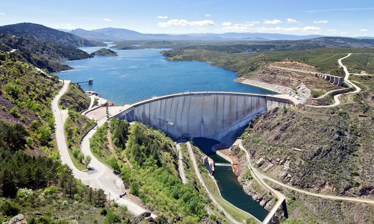
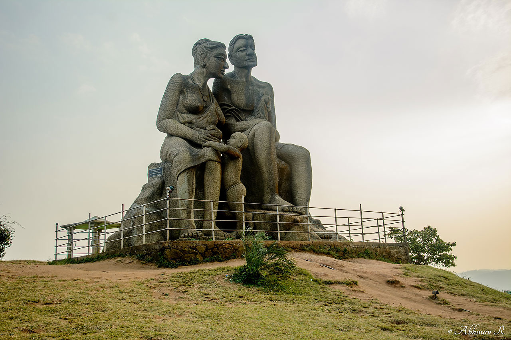
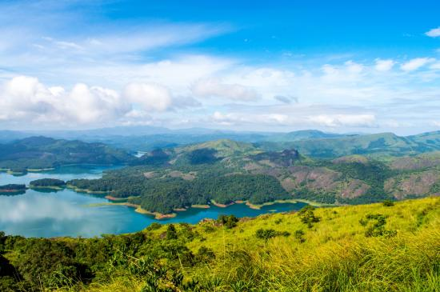
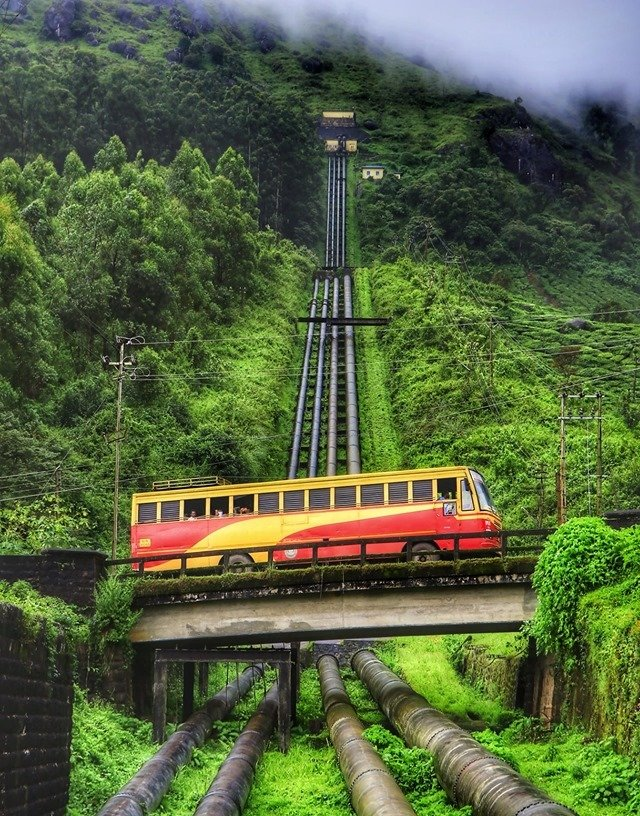
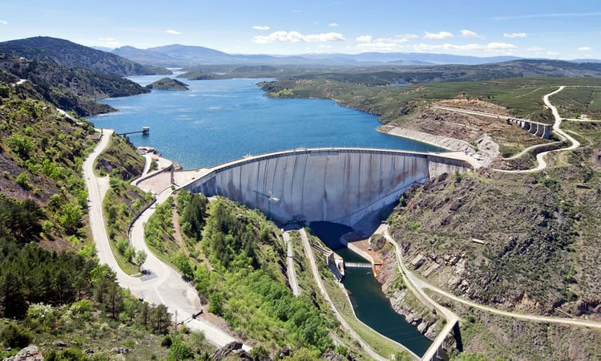
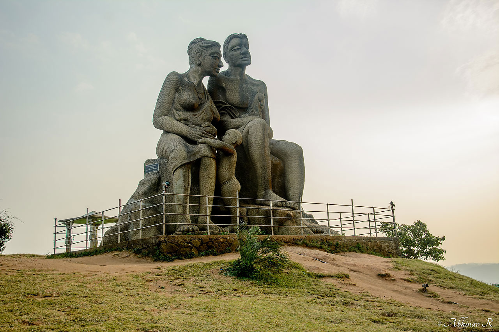
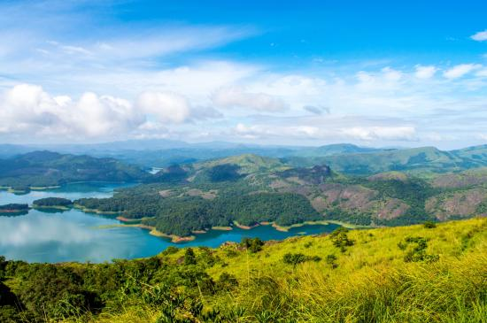
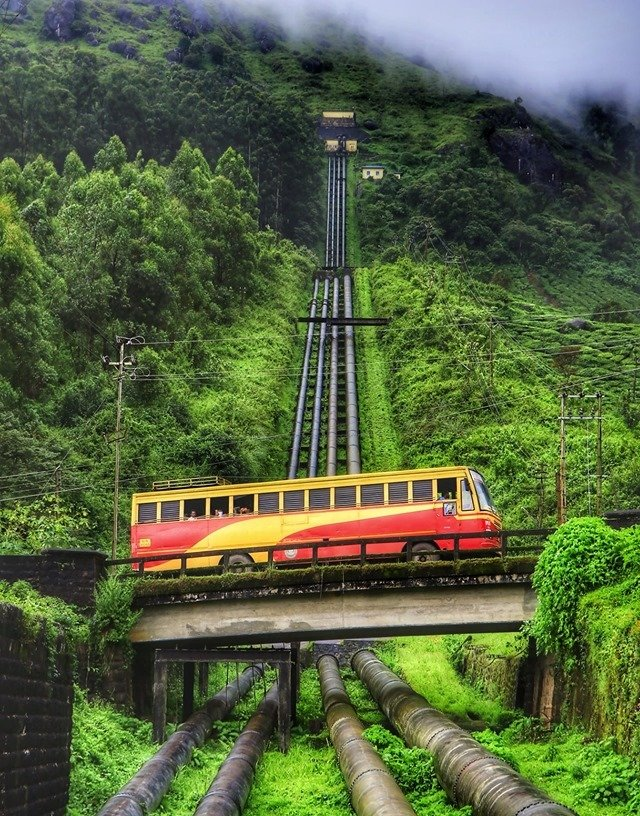
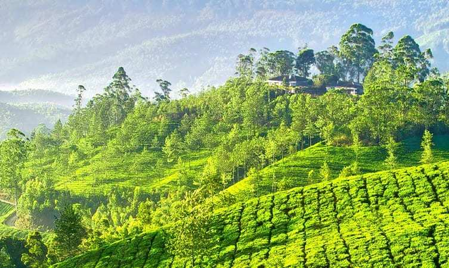
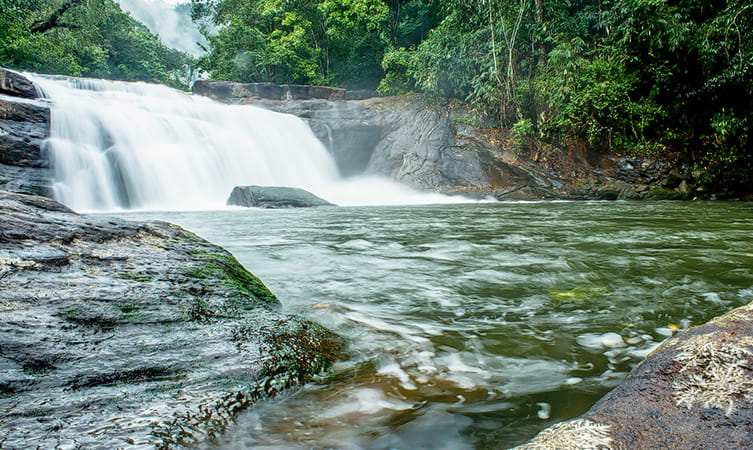

IDUKKI
Idukki is a district created in 1972 in the state of Kerala. It is one of the most nature rich areas of Kerala and remains untouched by commercial tourism. The district is known for its dams and hydroelectric power plants over the numerous rivers that flow through the area and the rich forests that are home to indigenous flora and fauna. Unlike popular hill stations and tourist places of Kerala, Idukki is still relatively unknown to a lot of people, which is why it packed with many places to visit and experience

 







1. IDUKKI ARCH DAM
The Idukki Arch dam is known as the first in Asia and the world’s second largest arch dam spreading over a height of 550ft. The dam was built over the Periyar River and between two mountains. The dam generates a lot of the electricity of the entire state. Tourists must visit this monumental dam that has gathered worldwide praise and applaud.
2. WILDLIFE SANCTUARY
The Idukki Wildlife Sanctuary is spread over 77 sq.km and has a reservoir formed by three dams namely, Cheruthoni, Idukki and Kulamanu. The sanctuary is home to a variety of endangered flora and fauna including the famous elephants of Kerala. The sanctuary is a must visit for travellers wanting to see nature as its best.
3. POTHAMEDU PLANTATIONS

Pothamedu Plantations, one of the places to visit in Idukki, bedazzles the tourists with its lush greenery. The lush green beds of coffee, the groomed tea gardens, and the wood-shaded cardamom plantations imprint an unforgettable picture in the minds of the visitors.
4. THOMMANKUTHU WATERFALLS

The Thoommankuthu Falls has been named after a person called Thomman who fell into the waterfall while trying to cross the river. The waterfall is known as the seven step waterfall because it has seven water cascades and pools. The whole area has a number of caves and rocks that is considered as a great spot of adventure activities like rock climbing and camping.